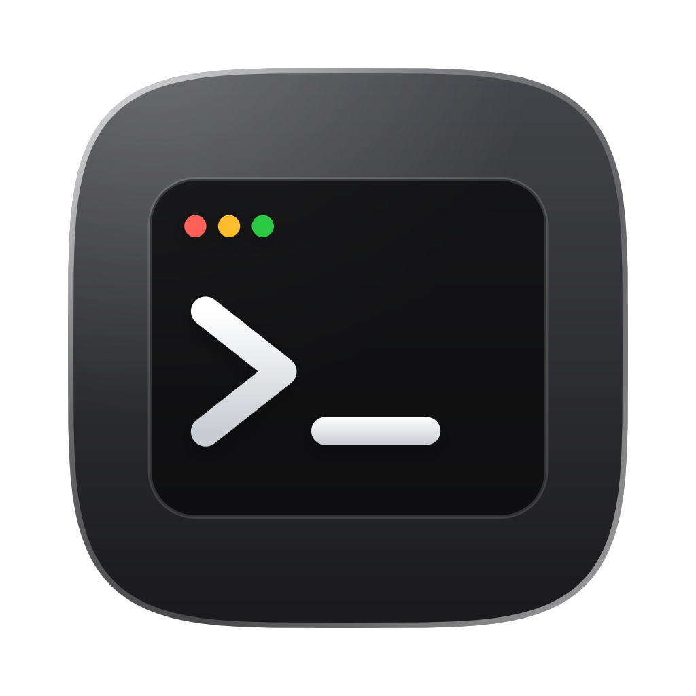
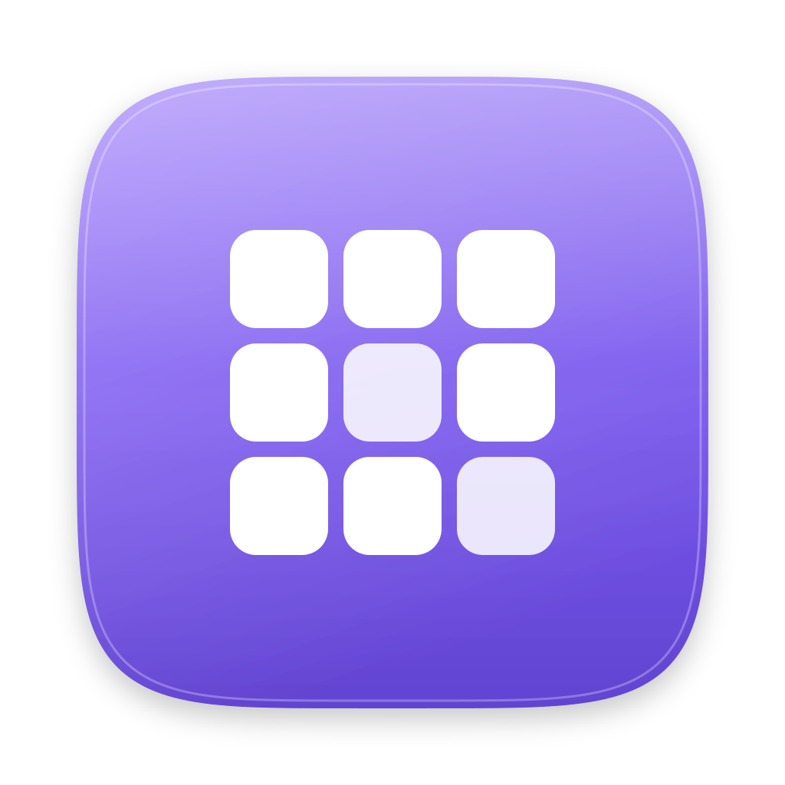

The capture proved rmac's plan wrong: macOS does not show a result list for a single match.
It completes inside the bar — you type term and the bar reads
terminal.app — Open with the app's glyph on a plate at the right end.
Build this first; the list is the exception.
When several results match, the list appears as a separate card 8 px below the bar — never joined to it. Rows 44 px, section headers in 10 px tertiary caps.
The other layout the capture corrected: not a 2 × 2 grid. Pills for connectivity, a Now Playing card, a row of circular buttons, then full-width slider modules, then Edit Controls. Clicking the circle toggles; clicking the label expands the module in place.
| What to copy | Value | Rust field |
|---|---|---|
| Panel width / top / right inset | 287 / 34 / 20 | metrics.cc_* |
| Module radius / gap / padding | 26 / 10 / 12 | radii.cc_module |
| Circular toggle | 36px; on = #1372F9, off = rgba(255,255,255,.16) | metrics.cc_toggle |
| Thick slider | 28px tall, radius 14, fill white, glyph inside at the left | metrics.cc_slider |
| Module material | rgba(84,96,116,.40) (measured composite #36414E) | materials.cc_module |
Cards float individually — there is no panel behind them. A banner slides in from the right over 350 ms and leaves after 5 s. Notification Centre is the same card stacked in groups, opened by clicking the clock.

Appears on volume, brightness and keyboard-backlight keys. Repeated presses update it in place — they never restart the animation. It holds 1.6 s, then fades over 250 ms.
The third layout the capture corrected. Search field with the placeholder Applications,
a ⋯ menu, category chips, then a 7-column scrolling grid of 56 px icons. No pages, no page dots,
and the desktop behind is not blurred away.

Apps Documents Console Reminders Markdown Tweaks Graphs Bin